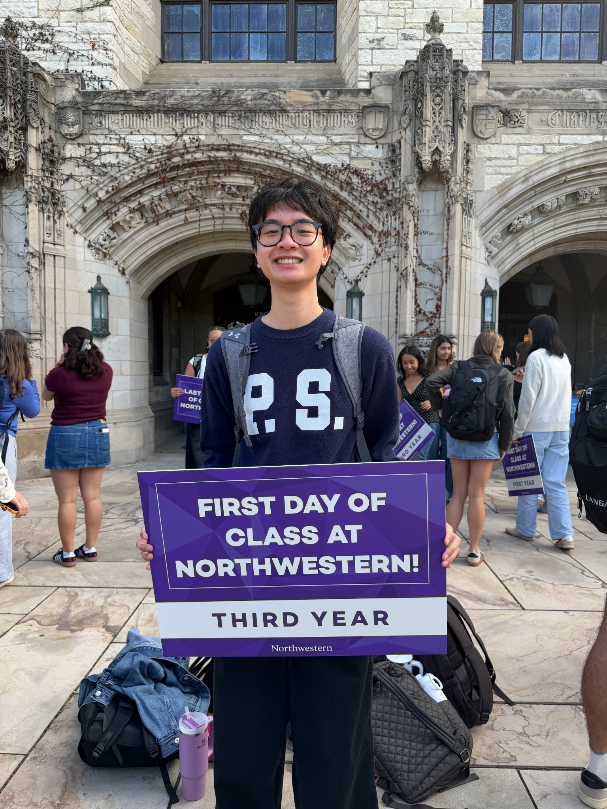
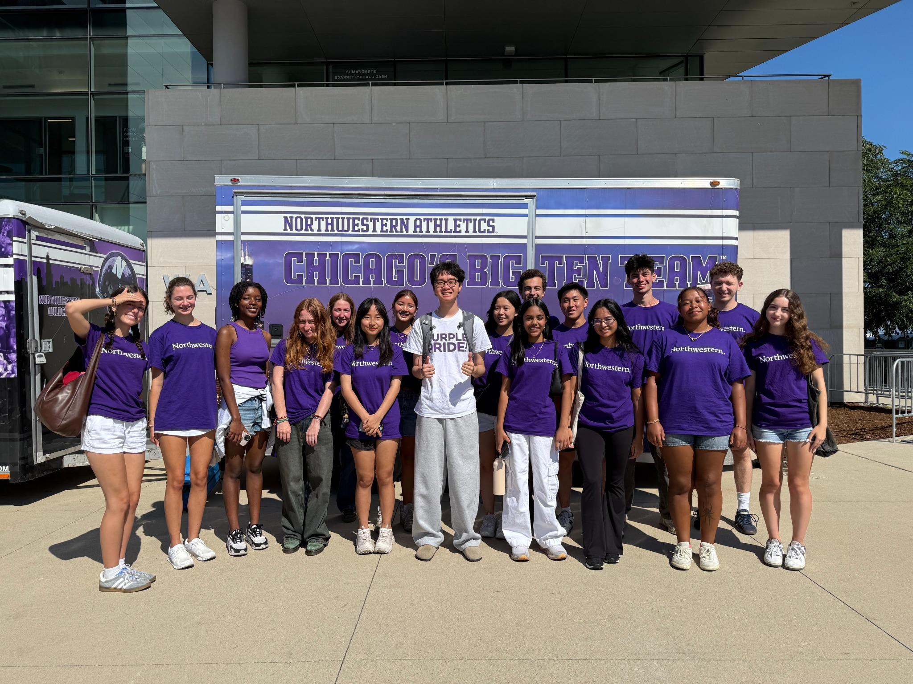
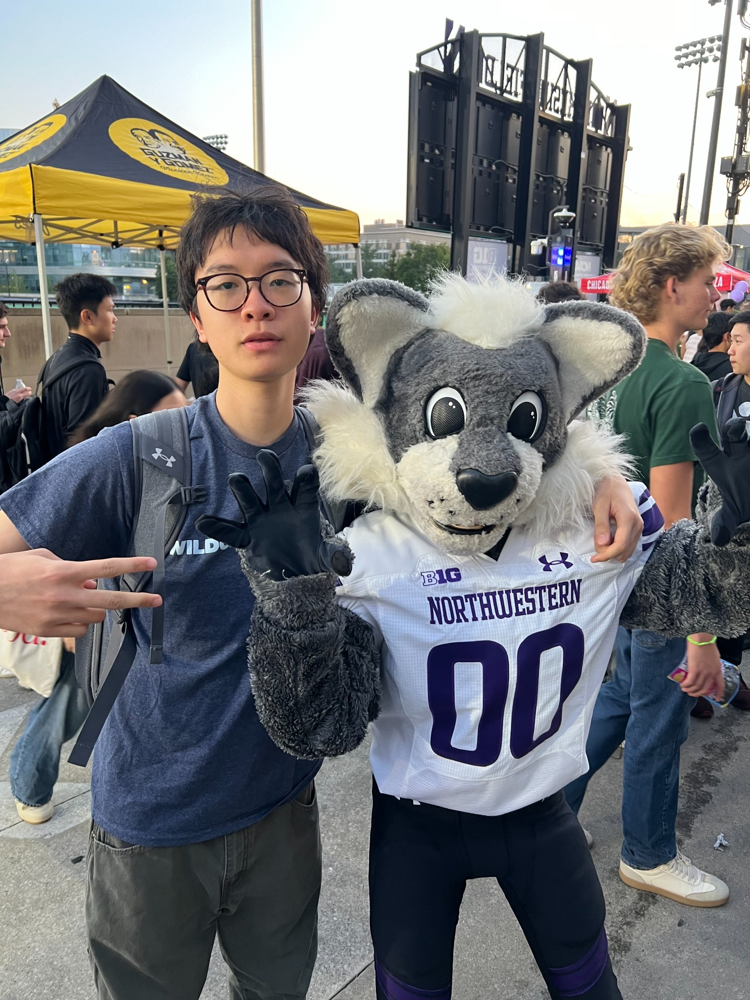
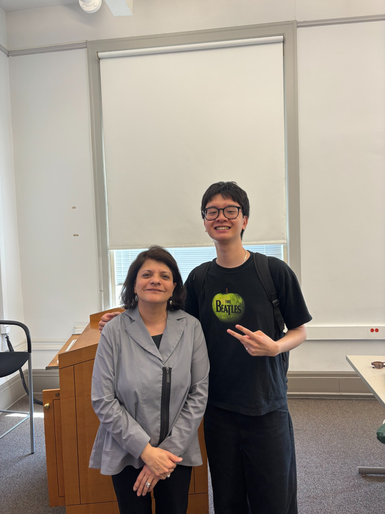

Hi, I'm Carter!
Driven by my passion for storytelling, research, and public service, my work aims to better understand the communities and policies that shape people's lives. I am currently a third-year student at Northwestern University studying Journalism, Political Science, and Integrated Marketing Communications.
On campus, I am a section editor for the Northwestern Business Review and nuAZN, Northwestern's Asian-interest literary magazine. Off campus, I am a weekly morning tutor with the Books & Breakfast program in Evanston and an NU Votes Ambassador. My research experience spans topics from historic infrastructure injustice in Nashville to artificial intelligence's impact on post-pandemic journalism.
In my free time, I love cheering on the New York Knicks and perfecting my fried rice recipe!



